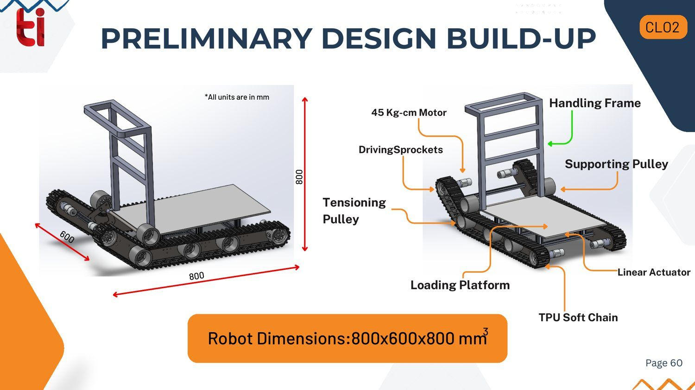
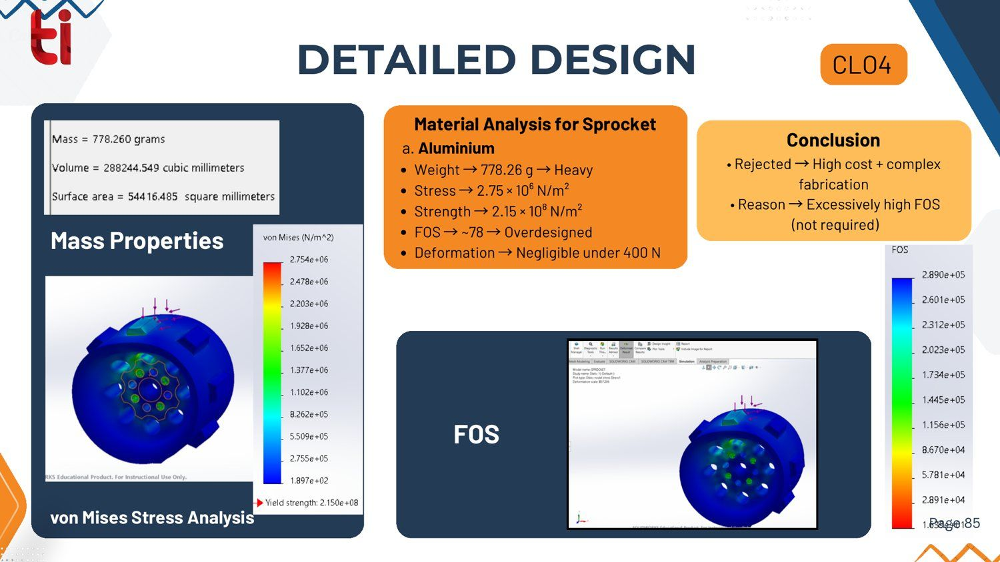
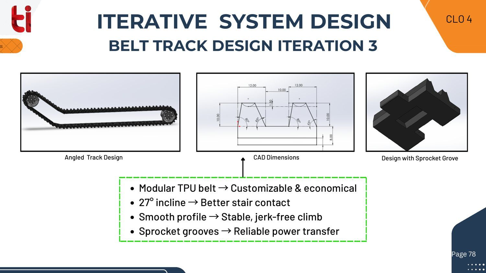

01At a glance
800³mm envelope800 × 600 × 800 mm, preliminary design
45 kg·cmdrive motorspecified in the preliminary build-up
27°track inclineiteration 3, for better stair contact
~78FOS, Al sprocketat 400 N; over-designed, so rejected
02The engineering problem
Moving loads up stairs in Indian homes is a different problem from industrial stair-climbing. The stairs are narrow and irregular, and the device has to be portable, maintainable and affordable. The project started from site and market observations, which became design constraints on stair geometry, payload, terrain, portability and maintainability.
03Architecture

- Track drive: TPU soft-chain track on driving sprockets, with tensioning and supporting pulleys, powered by a 45 kg·cm motor.
- Loading platform: carried on the chassis and adjusted by a linear actuator, to keep the load level during the climb.
- Handling frame: for manual guidance and portability.
04Design decisions
Decision 01 · Material selection
Reject an aluminium sprocket: it was over-designed
I ran a static FEA study of the sprocket under a 400 N load in SolidWorks Simulation.
FoundPeak von Mises stress ≈ 2.75 × 10⁶ N/m² against a yield strength of 2.15 × 10⁸ N/m², giving a factor of safety of ~78. Deformation was negligible. Mass was 778.26 g.
DecidedRejected. A factor of safety that high isn't needed, and aluminium added mass, cost and fabrication complexity for no benefit.
LessonAnalysis that shows a part is far stronger than needed is as useful as analysis that shows it will fail. It points to where mass and cost can come out.

Decision 02 · Track design, iteration 3
A modular TPU belt with a 27° incline
Modular TPUCustomisable and economical to produce and repair
27° inclineBetter contact with the stair edges
Smooth profileA stable climb without jerks
Sprocket groovesReliable power transfer from sprocket to belt

05My contribution & status
I translated the surveyed constraints into the mechanical design, carrying it through mechanism development, CAD, FEA, material selection, prototyping and experimental validation.
Tools
SolidWorksSolidWorks Simulation (FEA)Material selectionPrototyping